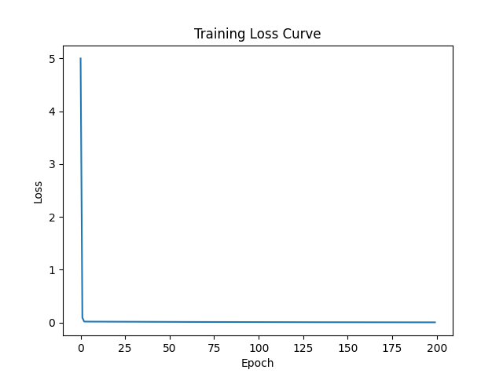

Day 2 - Quadratic Regression 📊
Extended linear regression into a quadratic model using PyTorch and studied training stability.
What I did
- Built model: y = w1x² + w2x + b
- Trained using gradient descent
- Tuned learning rate to avoid NaN explosions
- Observed divergence vs convergence behavior
Output
Loss curve visualization:

← Back to Home